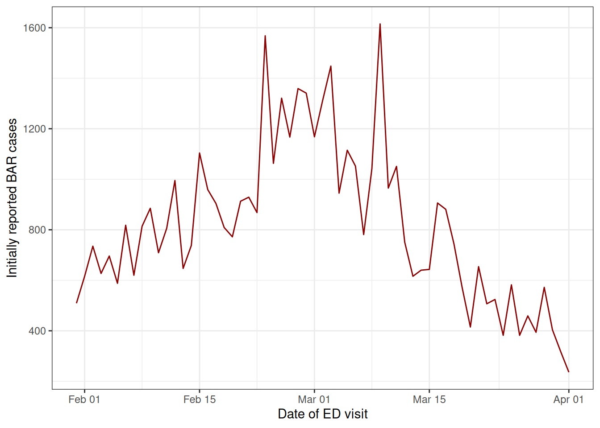

Nowcasting syndromic surveillance system data: a case study applied to the U.S. National Syndromic Surveillance Program (NSSP) data
Source:vignettes/nssp_nowcast.Rmd
nssp_nowcast.Rmd1 Introduction
Syndromic surveillance data are used by public health departments to understand trends in clinical encounters from electronic health records.
When these datasets are analysed in real-time, delays from the initial visit to updated diagnoses codes results in systematic downward bias in the counts of the primary event, i.e. the patient visit, due to the most recent dates being only partially observed.
Nowcasting uses historical reporting delays to correct for this downward bias and estimate the eventual, final observed cases, which provides an estimate of the trend in cases in real-time.
In this vignette, we will pre-process the timestamped data captured in each NSSP ESSENCE visit record to obtain data in the format we need for nowcasting, and then we will demonstrate how to specify and run the baselinenowcast workflow.
Lastly, we’ll summarise the nowcast and plot against the later observed data.
1.1 About syndromic surveillance system data
Syndromic surveillance system data contains information at the visit-level on the timing and nature of the patient’s clinical interactions. In this case study, we will use synthetic data from the United States’ National Syndromic Surveillance Program (NSSP) dataset available for participating jurisdictions through the Centers for Disease Control and Prevention’s (CDC) ESSENCE platform, to nowcast cases of Broad Acute Respiratory Incidence (BAR) defined by a set of diagnoses codes. These could easily be swapped out with another set of diagnoses codes e.g. for influenza-like illness, COVID-19, etc. The NSSP Emergency Department (ED) visit dataset is a dataset widely used by public health departments in the United States, representing many but not all counties in the country. The dataset contains information at the visit-level about each clinical encounter recorded in the electronic health record system during the patient’s hospital stay. Clinical encounters may begin to be associated with diagnoses codes at different points in the patient or clinical processing journey (e.g. during registration, triage, clinical encounter, after laboratory results are returned, or during coding for billing, etc.), and are captured through update messages to the syndromic surveillance system once they are entered into a facility’s electronic health record. The difference between the visit date - when the patient registers in the emergency department- and the time of the diagnosis update pertaining to the diagnosis of interest, is used to compute a reporting delay for each patient. Reporting delays for diagnoses of interest can vary by a range of factors including by pathogen/syndrome, season, time of day or week, means of diagnosis, the electronic health record system, or treating facility. Note that all visits that originate in the emergency department are used for this analysis, regardless of eventual inpatient admission.
1.2 Load packages
We use the baselinenowcast package for nowcasting, dplyr, and tidyr for data manipulation, stringr for parsing text data, lubridate for formatting dates, ggplot2 for plotting, and purrr for mapping diagnoses codes to text fields in the data.
For baselinenowcast, see the installation instructions.
2 NSSP data pre-processing
We will walk through how to preprocess the line list NSSP data details dataset in order to obtain a long tidy dataframe containing the incident counts of “cases” of a particular syndrome by reference date (in this instance the date the visit started) and report date (the date the patient’s record was updated with the corresponding diagnosis of interest). We need the data in this format to estimate the reporting delay, which we will then apply to the partial observations to produce a nowcast – an estimate of the final observed cases.
2.1 Load in the line list data
This typically will be pulled using an API, but here we provide the syn_nssp_line_list dataset as package data.
syn_nssp_line_list
#> # A tibble: 25 × 8
#> C_Processed_BioSense_ID CCDDParsed DischargeDiagnosisMD…¹
#> <chr> <chr> <chr>
#> 1 2024.02.03.23961E_2353110519 COUGH SENT BY UC | ;U0… {1};2024-02-03 13:45:…
#> 2 2024.02.04.23970E_8016495577 COUGH COVID | ;U071; {1};2024-02-04 10:29:…
#> 3 2024.02.09.6146E_MM20716469698 VOMITING NAUSEA | ;U07… {1};2024-02-09 01:50:…
#> 4 2024.02.08.23960I_3453027660 DIVERTICULITIS | ;R197… {1};2024-02-08 19:05:…
#> 5 2024.02.02.6170E_HF221066059 PREGNANT COLD SYMPTOMS… {1};2024-02-02 01:15:…
#> 6 2024.02.09.6148I_230936904054 NAUSEU WEAK BACK PAIN … {1};2024-02-09 16:01:…
#> 7 2024.02.04.6139I_107268480 SHORTNESS OF BREATH | … {1};2024-02-04 09:17:…
#> 8 2024.02.09.6131E_MP009028546 FLU LIKE SYMPTOMS | ;U… {1};2024-02-09 13:30:…
#> 9 2024.02.03.30901E_15694614 SHORTNESS OF BREATH | … {1};2024-02-03 06:57:…
#> 10 2024.02.05.23956E_315489587 FOOT PAIN FOOT INJURY … {1};2024-02-05 05:49:…
#> # ℹ 15 more rows
#> # ℹ abbreviated name: ¹DischargeDiagnosisMDTUpdates
#> # ℹ 5 more variables: DischargeDiagnosisUpdates <chr>, HasBeenAdmitted <dbl>,
#> # C_Visit_Date_Time <dttm>, c_race <chr>, sex <chr>Note: This dataset does not represent data from real patients, it is entirely synthetic and designed to mirror the NSSP update fields, which records the timing of a clinical encounter and the corresponding diagnoses code, if any. See ?syn_nssp_line_list for full documentation.
2.2 Define the “syndrome” definition
In this near-real-time emergency department dataset, we use public health surveillance definitions, or “syndrome” definitions. These syndrome definitions exist for a range of public health concerns and are primarily defined by the CDC’s NSSP Community of Practice, who consult subject matter experts from public health departments. They definitions typically rely on the presence of diagnosis code(s), specific free text captured in clinical notes, or a combination of these. In some instances, exclusion criteria are incorporated into these definitions to improve their specificity.
Here we will list the diagnosis codes which correspond to Broad Acute Respiratory, but any sets of diagnosis codes that define a syndrome could be used interchangeably. To be considered a Broad Acute Respiratory case, one or more of these codes must be reported.
diagnoses_codes_defn <- c("A22.1", "A221", "A37", "A48.1", "A481", "B25.0", "B250", "B34.2", "B34.9", "B342", "B349", "B44.0", "B44.9", "B440", "B449", "B44.81", "B4481", "B97.2", "B97.4", "B972", "B974", "J00", "J01", "J02", "J03", "J04", "J05", "J06", "J09", "J10", "J11", "J12", "J13", "J14", "J15", "J16", "J17", "J18", "J20", "J21", "J22", "J39.8", "J398", "J40", "J47.9", "J479", "J80", "J85.1", "J851", "J95.821", "J95821", "J96.0", "J96.00", "J9600", "J96.01", "J9601", "J96.02", "J9602", "J96.2", "J960", "J962", "J96.20", "J9620", "J96.21", "J9621", "J9622", "J96.22", "J96.91", "J9691", "J98.8", "J988", "R05", "R06.03", "R0603", "R09.02", "R0902", "R09.2", "R092", "R43.0", "R43.1", "R43.2", "R430", "R431", "R432", "U07.1", "U07.2", "U071", "U072", "022.1", "0221", "034.0", "0340", "041.5", "0415", "041.81", "04181", "079.1", "079.2", "079.3", "079.6", "0791", "0792", "0793", "0796", "079.82", "079.89", "07982", "07989", "079.99", "07999", "117.3", "1173", "460", "461", "462", "463", "464", "465", "466", "461.", "461", "461.", "464.", "465.", "466.", "461", "464", "465", "466", "478.9", "4789", "480.", "482.", "483.", "484.", "487.", "488.", "480", "481", "482", "483", "484", "485", "486", "487", "488", "490", "494.1", "4941", "517.1", "5171", "518.51", "518.53", "51851", "51853", "518.6", "5186", "518.81", "518.82", "518.84", "51881", "51882", "51884", "519.8", "5198", "073.0", "0730", "781.1", "7811", "786.2", "7862", "799.02", "79902", "799.1", "7991", "033", "033.", "033", "780.60", "78060") # nolint2.3 Expand the data so that each “event” has its own column
First we will pivot the line-list’s time stamp and diagnosis update columns into a long format with one row per update.
We will create two datasets which parse the characters in the columns DischargeDiagnosisMDTUpdates and DischargeDiagnosisUpdates , which contain a string listing the time stamp and diagnosis codes (respectively) of each “event” in the clinical encounter, formatted as:
{event number};YYYY-MM-DD HH:MM:SS;|{event number 2};YYYY-MM-DD HH:MM:SS;|forDischargeDiagnosisMDTUpdates{event number};{diagnoses codes};|{event number 2}{diagnoses codes};|forDischargeDiagnosisUpdates
The timestamp records the timing of diagnosis code updates related to each clinical encounter, capturing the point in time when each new code became available within the NSSP system. Later, we will merge the two datasets back together by the unique patient ID and the event number, so that we can associate each set of diagnoses codes with a timestamp.
We will use tidyr::separate_wider_delim() to expand these entries, so that each “event” has its own column.
Since patients experience a different number of patient update “events”, there will be missing values for patients not experiencing many events during their visit.
The columns will be named by the original column name + the event number, e.g. DischargeDiagnosisMDTUpdates1.
We’ll write a function to do this for both the time stamps and diagnoses codes.
expand_events <- function(line_list, event_col_name) {
wide_line_list <- separate_wider_delim(line_list,
{{ event_col_name }},
delim = "{", names_sep = "", too_few = "align_start"
)
return(wide_line_list)
}Expand both the time stamps and diagnoses codes, and remove the column containing the information on the other.
syn_nssp_time_stamps_wide <- expand_events(
line_list = syn_nssp_line_list,
event_col_name = "DischargeDiagnosisMDTUpdates"
) |>
select(-DischargeDiagnosisUpdates)
syn_nssp_diagnoses_wide <- expand_events(
line_list = syn_nssp_line_list,
event_col_name = "DischargeDiagnosisUpdates"
) |>
select(-DischargeDiagnosisMDTUpdates)We will write a function that, for each of the diagnoses and time stamps datasets, find the name of the last update column, and uses that to pivot the data from wide to long. This creates a long tidy dataframe where each row is now an event.
wide_to_long <- function(wide_line_list,
event_col_name,
values_to,
names_to,
id_col_name) {
long_data <- wide_line_list |>
pivot_longer(
cols = starts_with({{ event_col_name }}),
names_to = {{ names_to }},
values_to = {{ values_to }},
values_drop_na = FALSE
) |>
mutate(
event_id = paste(
.data[[id_col_name]],
as.numeric(str_extract(as.character(.data[[names_to]]), "[0-9.]+"))
)
)
return(long_data)
}Pivot both datasets from long to wide using the function above, specifying the name of the column which will hold the values (either time stamps or diagnoses).
We will create a unique event ID using the event number and the patient ID (id_col_name) which in this case is the C_Processed_BioSense_ID column.
syn_nssp_time_stamps_long <- wide_to_long(
wide_line_list = syn_nssp_time_stamps_wide,
event_col_name = "DischargeDiagnosisMDTUpdates",
values_to = "time_stamp",
names_to = "column_name",
id_col_name = "C_Processed_BioSense_ID"
)
syn_nssp_diagnoses_long <- wide_to_long(
wide_line_list = syn_nssp_diagnoses_wide,
event_col_name = "DischargeDiagnosisUpdates",
values_to = "diagnoses_codes",
names_to = "column_name",
id_col_name = "C_Processed_BioSense_ID"
)Next, we will clean up the time stamps in the data so that the time_stamp column is formatted as %Y-%m-%d %H:%M:%S, format the visit time the same (C_Visit_Date_Time) and then we will filter out an events that are not present (updates are NAs).
syn_nssp_time_stamps <-
syn_nssp_time_stamps_long |>
mutate(
time_stamp = as.POSIXct(
str_remove_all(
str_remove(time_stamp, ".*\\}"),
"[|;]+"
),
format = "%Y-%m-%d %H:%M:%S",
tz = "UTC"
),
C_Visit_Date_Time = as.POSIXct(C_Visit_Date_Time)
) |>
drop_na(time_stamp)Clean up the diagnoses codes and remove the empty updates from the diagnoses dataset. For these, we want to keep the semi-colons and just remove the numbers since this information is stored in the event ID. We will only use the event ID and the diagnoses codes, as this will be merged back into the time stamped dataset.
syn_nssp_diagnoses <-
syn_nssp_diagnoses_long |>
mutate(diagnoses_codes = str_remove(diagnoses_codes, ".*\\}")) |>
filter(nzchar(diagnoses_codes)) |>
drop_na() |>
select(event_id, diagnoses_codes)Merge together the time stamps of events and the diagnoses codes. Filter to remove empty updates.
nssp_merged <- merge(syn_nssp_time_stamps,
syn_nssp_diagnoses,
by = "event_id"
) |>
filter(diagnoses_codes != ";;|")Now we have a dataframe where each row is an event, with the patient’s visit start date (C_Visit_date_Time), the patient ID (C_Processed_BioSense_ID), the diagnoses code at the event (diagnoses_code), and the time stamp of the event (time_stamp).
Next we will add a column for the time from arrival to each updated diagnosis, in days.
nssp_updates <- nssp_merged |>
mutate(arrival_to_update_delay = as.numeric(difftime(
time_stamp, C_Visit_Date_Time,
units = "days"
)))We next filter through the updates to find the first “hit” that corresponds to the diagnosis codes in the syndromic surveillance definition for BAR.
bar_updates <- nssp_updates |>
filter(map_lgl(diagnoses_codes, ~ any(str_detect(.x, diagnoses_codes_defn))))Next, we will order these by the delay from visit to the diagnoses, and for each patient keep only the first update containing the BAR diagnoses code(s).
first_bar_diagnosis <- bar_updates |>
arrange(arrival_to_update_delay) |>
group_by(C_Processed_BioSense_ID) |>
slice(1)Label the visit start date, C_Visit_Date_Time, as the reference date,reference_date and time_stamp as the report date, report_date and remove the other column names that are no longer needed, as each row now represents a case.
clean_line_list <- first_bar_diagnosis |>
mutate(
reference_date = as.Date(C_Visit_Date_Time),
report_date = as.Date(time_stamp)
) |>
ungroup()
head(clean_line_list)
#> # A tibble: 6 × 13
#> event_id C_Processed_BioSense…¹ CCDDParsed HasBeenAdmitted C_Visit_Date_Time
#> <chr> <chr> <chr> <dbl> <dttm>
#> 1 2024.02… 2024.02.01.23959I_204… ABNORMAL … 1 2024-02-01 13:30:00
#> 2 2024.02… 2024.02.01.23965V_656… DIFFICULT… 1 2024-02-01 09:26:00
#> 3 2024.02… 2024.02.01.24119E_H10… COUGH FEV… 1 2024-02-01 13:25:00
#> 4 2024.02… 2024.02.01.24167I_065… LETHARGY … 1 2024-02-01 11:15:00
#> 5 2024.02… 2024.02.01.6132E_2260… COVID LAS… 0 2024-02-01 13:36:00
#> 6 2024.02… 2024.02.01.6133I_2490… HIGH BLLO… 1 2024-02-01 11:04:00
#> # ℹ abbreviated name: ¹C_Processed_BioSense_ID
#> # ℹ 8 more variables: c_race <chr>, sex <chr>, column_name <chr>,
#> # time_stamp <dttm>, diagnoses_codes <chr>, arrival_to_update_delay <dbl>,
#> # reference_date <date>, report_date <date>2.4 Obtain counts of cases by reference date (visit date) and report date (time of first diagnosis)
For nowcasting, we want to compute the number of incident cases indexed by reference and report date, so we can aggregate by reference and report date and compute the delay distribution.
count_df_raw <- clean_line_list |>
group_by(reference_date, report_date) |>
summarise(count = n()) |>
mutate(delay = as.integer(report_date - reference_date))
#> `summarise()` has grouped output by 'reference_date'. You can override using
#> the `.groups` argument.Looking at this data, we can see that there is one case where there is a negative delay, which indicates that the time stamp of the diagnosis update was recorded before the start of the visit. Depending on the way that the data is generated, this could be a true negative value, for example if the patient had previously been tested elsewhere before arriving at the ED. In this case, patients interactions with the system always start in the ED, so this is likely due to a data entry error. For this reason, we will will choose to exclude all the negative valued delays, however, the choice of how to handle these should be guided be guided by the data experts and their understanding of the most likely reason for the observation to prevent introducing additional bias in this choice.
count_df <- filter(count_df_raw, delay >= 0)
head(count_df)
#> # A tibble: 6 × 4
#> # Groups: reference_date [3]
#> reference_date report_date count delay
#> <date> <date> <int> <int>
#> 1 2024-02-01 2024-02-01 4 0
#> 2 2024-02-01 2024-02-02 1 1
#> 3 2024-02-01 2024-02-20 1 19
#> 4 2024-02-02 2024-02-05 1 3
#> 5 2024-02-02 2024-02-10 1 8
#> 6 2024-02-03 2024-02-03 1 0We have now generated data in the format that we need to use the baselinenowcast package, which requires a long tidy dataframe with incident case counts indexed by reference date and report date.
See the Getting Started and model definition vignettes for more details on the data format we need for nowcasting.
For demonstration purposes, we will now swap out the data from the simulated NSSP line-list data with a larger synthetic dataset.
In reality you would proceed straight from this dataset to the subsequent steps, using the case counts indexed by reference date and report date to run the nowcasting workflow.
3 Pre-processing of larger synthetic dataset
We’ll start by loading in the synthetic reporting triangle dataframe, which is also provided as package data.
syn_nssp_df
#> # A tibble: 3,795 × 3
#> reference_date report_date count
#> <date> <date> <dbl>
#> 1 2025-10-25 2025-10-25 194
#> 2 2025-10-25 2025-10-26 54
#> 3 2025-10-25 2025-10-27 26
#> 4 2025-10-25 2025-10-28 13
#> 5 2025-10-25 2025-10-29 12
#> 6 2025-10-25 2025-10-30 13
#> 7 2025-10-25 2025-10-31 5
#> 8 2025-10-25 2025-11-04 14
#> 9 2025-10-25 2025-11-05 9
#> 10 2025-10-25 2025-11-06 14
#> # ℹ 3,785 more rowsNote: This dataset represents synthetic data on the number of incident cases indexed by reference date and report date. It was generated to approximately mirror trends in BAR cases during a season without using any real data. See ?syn_nssp_df for full documentation.
You can see that this larger synthetic dataset has the same format as the one we generated from the line list NSSP data – with columns for reference date, report date, and counts.
3.1 Exploratory data analysis to identify an appropriate maximum delay
To produce a nowcast withbaselinenowcast, we will first want to perform an exploratory data analysis to visualize trends in the delay distribution.
This will help us choose a maximum delay and specify the number of reference times we want to use for delay and uncertainty estimation.
Click to expand code to create plots of the delay distributions
long_df <- syn_nssp_df |>
mutate(delay = as.integer(report_date - reference_date))
delay_df_t <- long_df |>
group_by(reference_date) |>
summarise(mean_delay = sum(count * delay) / sum(count))
delay_summary <- long_df |>
mutate(mean_delay_overall = sum(count * delay) / sum(count))
avg_delays <- long_df |>
group_by(delay) |>
summarise(pmf = sum(count) / sum(long_df$count)) |>
mutate(cdf = cumsum(pmf))
delay_t <- ggplot(delay_df_t) +
geom_line(aes(
x = reference_date,
y = mean_delay
)) +
geom_line(
data = delay_summary,
aes(
x = reference_date,
y = mean_delay_overall
),
linetype = "dashed"
) +
xlab("") +
ylab("Mean delay") +
theme_bw()
cdf_delay <- ggplot(avg_delays) +
geom_line(aes(x = delay, y = cdf)) +
geom_hline(aes(yintercept = 0.95), linetype = "dashed") +
theme_bw()
cdf_delay
delay_tBased on this figure, we can set the maximum delay to be 25 days as this is where 95% of the cases appear to have been reported. In general, we want to choose a maximum delay that will incorporate the vast majority of all observed reporting delays so that the estimates of the final counts account for all eventual cases reported. However, a longer maximum delay will mean that you will require more historical data for training the model, which must be considered if the amount of historical data is limited say in a novel outbreak situation. In order to produce a nowcast that we can evaluate against later observed data for this example, we will pretend that we are making a nowcast 30 days before the last reference date in the dataset, May 5th, 2026. In real-time, we would just use the latest reference date as our nowcast date, however, for evaluating the performance of the method we want to look back at the nowcast we would have made with the data we would have had at past time points. See the Getting Started vignette for another example of evaluating our nowcast, and for a full quantitative evaluation of the method applied to different case studies, see our pre-print where we evaluate the method on COVID-19 cases in Germany and norovirus cases in England.
3.2 Format for baselinenowcast
First, we’ll remove any reports after the nowcast date, as these wouldn’t have been available to us in real-time.
training_df <- filter(
long_df,
report_date <= nowcast_date
)What would happen if we looked at the trend in case counts without correcting for downward bias due to partial observations? We can summarise the cases by reference dates and plot.
training_df_by_ref_date <- training_df |>
filter(report_date <= nowcast_date) |>
group_by(reference_date) |>
summarise(initial_count = sum(count))Click to expand code to create the plot of the initially reported cases
plot_inits
We can see that without nowcasting, the cases appear to be sharply declining at the most recent dates. We can’t tell from this data alone if the true trend in cases is really declining rapidly or if it is plateauing or increasing, which is why we need to use nowcasting to make an estimate of the eventually reported cases at each visit date.
From here, we have the case counts by reference and report date up until the nowcast date.
We will generate a reporting triangle (see the mathematical model vignette for more details), using the helper function as_reporting_triangle().
This helper function fills in all combinations of reference dates and delays and pivots the data from long to wide to obtain a reporting triangle where rows are reference dates and columns are delays.
This is returned as a reporting_triangle class object which is ready to be used for nowcasting.
rep_tri_full <- as_reporting_triangle(training_df)
#> ℹ Using max_delay = 154 from dataLet’s look at the reporting triangle object we’ve created:
rep_tri_full
#> Reporting Triangle
#> Delays unit: days
#> Reference dates: 2025-10-25 to 2026-04-01
#> Max delay: 154
#> Structure: 1
#>
#> Showing last 10 of 159 rows
#> Showing first 10 of 155 columns
#>
#> 0 1 2 3 4 5 6 7 8 9
#> 2026-03-23 210 131 34 50 35 12 1 25 20 6
#> 2026-03-24 221 96 22 10 13 6 0 5 9 NA
#> 2026-03-25 291 129 17 26 42 29 23 25 NA NA
#> 2026-03-26 179 96 22 50 9 8 18 NA NA NA
#> 2026-03-27 284 40 41 54 28 12 NA NA NA NA
#> 2026-03-28 217 78 46 14 39 NA NA NA NA NA
#> 2026-03-29 336 161 62 13 NA NA NA NA NA NA
#> 2026-03-30 296 53 55 NA NA NA NA NA NA NA
#> 2026-03-31 210 108 NA NA NA NA NA NA NA NA
#> 2026-04-01 236 NA NA NA NA NA NA NA NA NA
#>
#> Use print(x, n_rows = NULL, n_cols = NULL) to see all dataAnd we can get a summary of it:
summary(rep_tri_full)
#> Reporting Triangle Summary
#> Dimensions: 159 x 155
#> Reference period: 2025-10-25 to 2026-04-01
#> Max delay: 154 days
#> Structure: 1
#> Most recent complete date: 2025-10-29 (442 cases)
#> Dates requiring nowcast: 154 (complete: 5)
#> Rows with negatives: 0
#> Zeros: 9905 (77.9% of non-NA values)
#> Zeros per row summary:
#> Min. 1st Qu. Median Mean 3rd Qu. Max.
#> 0.0 18.5 63.0 62.3 100.5 145.0
#>
#> Mean delay summary (complete rows):
#> Min. 1st Qu. Median Mean 3rd Qu. Max.
#> 3.615 4.298 4.416 4.414 4.679 5.059
#>
#> 99% quantile delay (complete rows):
#> Min. 1st Qu. Median Mean 3rd Qu. Max.
#> 22.0 31.0 31.0 33.4 34.0 49.0We can see the maximum delay inferred from the data.
For this analysis, we want to limit our reporting triangle to a maximum delay of 25 days using truncate_to_delay():
rep_tri <- truncate_to_delay(rep_tri_full, max_delay = max_delay)
#> ℹ Truncating from max_delay = 154 to 25.Let’s check the truncated triangle:
rep_tri
#> Reporting Triangle
#> Delays unit: days
#> Reference dates: 2025-10-25 to 2026-04-01
#> Max delay: 25
#> Structure: 1
#>
#> Showing last 10 of 159 rows
#> Showing first 10 of 26 columns
#>
#> 0 1 2 3 4 5 6 7 8 9
#> 2026-03-23 210 131 34 50 35 12 1 25 20 6
#> 2026-03-24 221 96 22 10 13 6 0 5 9 NA
#> 2026-03-25 291 129 17 26 42 29 23 25 NA NA
#> 2026-03-26 179 96 22 50 9 8 18 NA NA NA
#> 2026-03-27 284 40 41 54 28 12 NA NA NA NA
#> 2026-03-28 217 78 46 14 39 NA NA NA NA NA
#> 2026-03-29 336 161 62 13 NA NA NA NA NA NA
#> 2026-03-30 296 53 55 NA NA NA NA NA NA NA
#> 2026-03-31 210 108 NA NA NA NA NA NA NA NA
#> 2026-04-01 236 NA NA NA NA NA NA NA NA NA
#>
#> Use print(x, n_rows = NULL, n_cols = NULL) to see all data
3.3 Specify the baselinenowcast model
Next, we’ll specify the number of reference times used for delay and uncertainty estimation as a factor of the maximum delay.
We’ll also specify the proportion of reference times which will be used for delay estimation, with the remaining used for estimating uncertainty.
We’ll set these as the default values, but in a real-world setting we recommend performing an evaluation analysis to identify the optimal amount of training data to be used for each of these tasks.
See the documentation for ?allocate_reference_times and the “Default Settings” section of the mathematical model vignette for more details.
scale_factor <- 3
prop_delay <- 0.5Internally, we will call allocate_reference_times() which uses the reporting triangle matrix and these specifications to allocate the number of reference times used for delay and uncertainty given the number of reference times available and the maximum delay.
Since our maximum delay is 25 days, this function will allocate 25*3 (75) reference times for fitting the model, with about half of them (37) being used for delay estimation and the other half (38) used for uncertainty estimation.
4 Run the baselinenowcast workflow
To produce a nowcast, we can use the baselinenowcast() function to generate an estimate of the “final” number of cases of BAR by reference date.
This function chains together the baselinenowcast workflow,
It handles allocating reference times for training (allocate_reference_times()), estimating a delay (estimate_delay()), generating a point nowcast (apply_delay()), and estimating and applying uncertainty (estimate_and_apply_uncertainty()), while also managing required bookkeeping to return nowcasts by reference dates.
See ?baselinenowcast.reporting_triangle for more details on each step in the workflow, and check out the mathematical_model for details on the mathematical model used for each component.
The baselinenowcast() function can ingest either a reporting triangle object as we made above, or a data.frame with cases by reference and report date for one or strata with support for common workflows such as sharing estimates across strata.
See ?baselinenowcast.data.frame for more details.
By default, the output_type = "samples" which means that it will estimate and apply uncertainty using past nowcast errors to generate probabilistic nowcast draws.
Point nowcasts can also be generated by specifying output_type = "point".
It will by default produce 1000 draws, but this can be specified as more or less using the draws argument.
nowcast_draws_df <- baselinenowcast(rep_tri,
scale_factor = scale_factor,
prop_delay = prop_delay,
draws = 1000
)
#> ℹ 0.5 reference times were specified for delay estimation but 0.493 of reference times used for delay estimation.
#> ℹ `prop_delay` not identical to the proportion of reference times used for delay estimation due to rounding.
head(nowcast_draws_df)
#> pred_count reference_date draw output_type
#> 1 382 2025-10-25 1 samples
#> 160 382 2025-10-25 2 samples
#> 319 382 2025-10-25 3 samples
#> 478 382 2025-10-25 4 samples
#> 637 382 2025-10-25 5 samples
#> 796 382 2025-10-25 6 samplesBecause we specified training volumes that did not result in integer reference times, we’ll get a message letting us know that 37/75, or 0.493 of the reference times are being used for delay estimation.
5 Summarise and plot the nowcast
We now have an estimate of the “final” number of cases of BAR by reference date with uncertainty. To summarise the uncertainty, we can compute prediction intervals. Here we will visualize the results using the 50th and 95th percent prediction intervals, though we suggest showing more prediction intervals if possible.
nowcast_summary_df <-
nowcast_draws_df |>
group_by(reference_date) |>
summarise(
median = median(pred_count),
q50th_lb = quantile(pred_count, 0.25),
q50th_ub = quantile(pred_count, 0.75),
q95th_lb = quantile(pred_count, 0.025),
q95th_ub = quantile(pred_count, 0.975)
)In order to compare our estimates to the data that was available as of the time of the nowcast and the “final” cases (which is what we were trying to estimate), we will join both the initially reported cases and the held out, true final cases to our probabilistic nowcasts. We already summarised the initial reports by reference date from the data used to train the nowcast model. Next summarise the final reports by reference date using all the data.
eval_data <- long_df |>
filter(
delay <= max_delay,
reference_date <= nowcast_date
) |>
group_by(reference_date) |>
summarise(final_count = sum(count))Lastly, join the initial and final reports to the probabilistic nowcast.
nowcast_w_data <- nowcast_summary_df |>
left_join(training_df_by_ref_date,
by = "reference_date"
) |>
left_join(eval_data,
by = "reference_date"
)
head(nowcast_w_data)
#> # A tibble: 6 × 8
#> reference_date median q50th_lb q50th_ub q95th_lb q95th_ub initial_count
#> <date> <dbl> <dbl> <dbl> <dbl> <dbl> <dbl>
#> 1 2025-10-25 382 382 382 382 382 402
#> 2 2025-10-26 432 432 432 432 432 439
#> 3 2025-10-27 351 351 351 351 351 363
#> 4 2025-10-28 361 361 361 361 361 364
#> 5 2025-10-29 426 426 426 426 426 442
#> 6 2025-10-30 362 362 362 362 362 367
#> # ℹ 1 more variable: final_count <dbl>5.1 Plot nowcast against later observed “final” data
Next we will make a plot of the nowcasted “final” cases compared to the initially reported cases and the true “final” reports.
The plot shows that, had we naively summarised the initial reports by reference date (red), it would have appeared as if the recent cases of BAR were declining rapidly.
With our probabilistic nowcast (gray), we can see an estimate of the true trend in real-time, which shows that the cases of BAR are plateauing rather than continuing to decline.
Compared to what we eventually observe (black), we can see that our nowcasts appear visually to have been relatively accurate.
For more quantitative evaluation, we recommend using proper scoring rules (e.g. using the scoringutils R package) to evaluate nowcasts.
Click to expand code to create the plot of the probabilistic nowcast
combined_data <- nowcast_w_data |>
select(reference_date, initial_count, final_count) |>
distinct() |>
pivot_longer(
cols = c(initial_count, final_count),
names_to = "type",
values_to = "count"
) |>
mutate(type = case_when(
type == "initial_count" ~ "Initially observed data",
type == "final_count" ~ "Final observed data"
)) |>
filter(reference_date >= nowcast_date - days(60))
nowcast_data_recent <- nowcast_w_data |>
filter(reference_date >= nowcast_date - days(60))
plot_prob_nowcast <- ggplot(nowcast_data_recent) +
geom_line(
aes(
x = reference_date, y = median
),
color = "gray"
) +
geom_ribbon(
aes(
x = reference_date,
ymin = q50th_lb, ymax = q50th_ub
),
alpha = 0.5,
fill = "gray"
) +
geom_ribbon(
aes(
x = reference_date,
ymin = q95th_lb, ymax = q95th_ub
),
alpha = 0.5,
fill = "gray"
) +
# Add observed data and final data once
geom_line(
data = combined_data,
aes(
x = reference_date,
y = count,
color = type
)
) +
theme_bw() +
scale_color_manual(
values = c(
"Initially observed data" = "darkred",
"Final observed data" = "black"
),
name = ""
) +
xlab("Date of ED visit") +
ylab("Number of BAR cases") +
theme(legend.position = "bottom") +
ggtitle("Comparison of cases of BAR as of the nowcast date, later observed,\n and generated as a probabilistic nowcast") # nolint
plot_prob_nowcast
6 Summary
In this vignette we used baselinenowcast to nowcast cases of BAR starting from synthetic syndromic surveillance system data designed to mirror the U.S. NSSP dataset.
We walked through the process of defining a syndromic surveillance definition using a list of diagnoses codes, and using the time stamps of updates in an electronic health record in the NSSP dataset to create a count of the number of cases of a specific definition indexed by the date of their visit and the date at which the patient’s diagnoses was recorded into the surveillance system.
From there we converted the data to a reporting_triangle object and then ran the baselinenowcast workflow using the baselinenowcast() function to generate probabilistic nowcasts.
This function chains together multiple steps, and we describe the modular workflow option in the Getting Started vignette.
As a final step, we compared our nowcasts of the eventual final observed case counts to what we later observed and the right-truncated initial reports.
Next steps include scoring the nowcasts we generated using proper scoring rules such as the weighted interval score (WIS) or the continuous ranked probability score (CRPS) and computing metrics such as the interval coverage to assess how well the observed data falls within our uncertainty bands.
See the scoringutils R package for resources on scoring predictions.
In this vignette we used the package’s default settings to specify the model, but the optimal settings will be dependent on the context and its important to tune the model for your dataset and needs.
The user has a number of choices in how to specify the model, such as the amount of training data to use for delay or uncertainty estimation, the choice of observation model, whether to separately estimate delays by weekday, or whether to borrow estimates from across different strata such as age groups or locations.
See the Getting Started vignette and model definition for more details on the different model specifications.
In our publication we show examples using the various model specifications to produce and evaluate the performance of age-group specific nowcasts of COVID-19 in Germany and norovirus cases in England.
Here’s a link to the code used to generate those nowcasts if interested in doing something similar for your own settings.
Visual inspection of the nowcasts produced, as well as visual inspection of the data such as the mean reporting delay over time and across weekdays, can help identify which specifications are most likely to improve performance. We encourage users to test the performance of different specifications of their model, ideally by producing nowcasts from different model specifications for a range of past nowcast dates, using the data that would have been available as of the past nowcast date, and comparing those nowcasts to later observed data. You could do this just as we did here when we filtered the long tidy data.frame indexed by reference and report date, to remove report dates before the nowcast date.